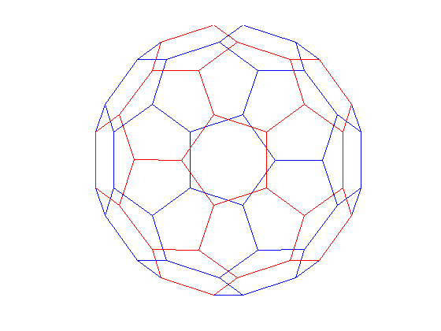

This demo gives an explanation of the relationship between graphs and matrices and a good application of SPARSE matrices.
A graph is a set of nodes with specified connections between them. An example is the connectivity graph of the Buckminster Fuller geodesic dome (also a soccer ball or a carbon-60 molecule).
In MATLAB, the graph of the geodesic dome can be generated with the BUCKY function.
% Define the variables. [B,V] = bucky; H = sparse(60,60); k = 31:60; H(k,k) = B(k,k); % Visualize the variables. gplot(B-H,V,'b-'); hold on gplot(H,V,'r-'); hold off axis off equal
A graph can be represented by its adjacency matrix.
To construct the adjacency matrix, the nodes are numbered 1 to N. Then element (i,j) of the matrix is set to 1 if node i is connected to node j, and 0 otherwise.
% Define a matrix A. A = [0 1 1 0 ; 1 0 0 1 ; 1 0 0 1 ; 0 1 1 0]; % Draw a picture showing the connected nodes. cla subplot(1,2,1); gplot(A,[0 1;1 1;0 0;1 0],'.-'); text([-0.2, 1.2 -0.2, 1.2],[1.2, 1.2, -.2, -.2],('1234')', ... 'HorizontalAlignment','center') axis([-1 2 -1 2],'off') % Draw a picture showing the adjacency matrix. subplot(1,2,2); xtemp=repmat(1:4,1,4); ytemp=reshape(repmat(1:4,4,1),16,1)'; text(xtemp-.5,ytemp-.5,char('0'+A(:)),'HorizontalAlignment','center'); line([.25 0 0 .25 NaN 3.75 4 4 3.75],[0 0 4 4 NaN 0 0 4 4]) axis off tight
Here are the nodes in one hemisphere of the bucky ball, numbered polygon by polygon.
subplot(1,1,1); gplot(B(1:30,1:30),V(1:30,:),'b-') for j = 1:30, text(V(j,1),V(j,2),int2str(j),'FontSize',10); end axis off equal
To visualize the adjacency matrix of this hemisphere, we use the SPY function to plot the silhouette of the nonzero elements.
Note that the matrix is symmetric, since if node i is connected to node j, then node j is connected to node i.
spy(B(1:30,1:30))
title('spy(B(1:30,1:30))')

Now we extend our numbering scheme to the whole graph by reflecting the numbering of one hemisphere into the other.
[B,V] = bucky; H = sparse(60,60); k = 31:60; H(k,k) = B(k,k); gplot(B-H,V,'b-'); hold on gplot(H,V,'r-'); for j = 31:60 text(V(j,1),V(j,2),int2str(j), ... 'FontSize',10,'HorizontalAlignment','center'); end hold off axis off equal
Finally, here is a SPY plot of the final sparse matrix.
spy(B)
title('spy(B)')
In many useful graphs, each node is connected to only a few other nodes. As a result, the adjacency matrices contain just a few nonzero entries per row.
This demo has shown one place where SPARSE matrices come in handy.
gplot(B-H,V,'b-'); axis off equal hold on gplot(H,V,'r-') hold off